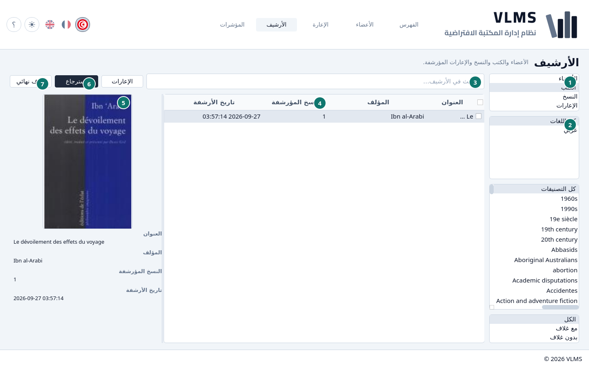
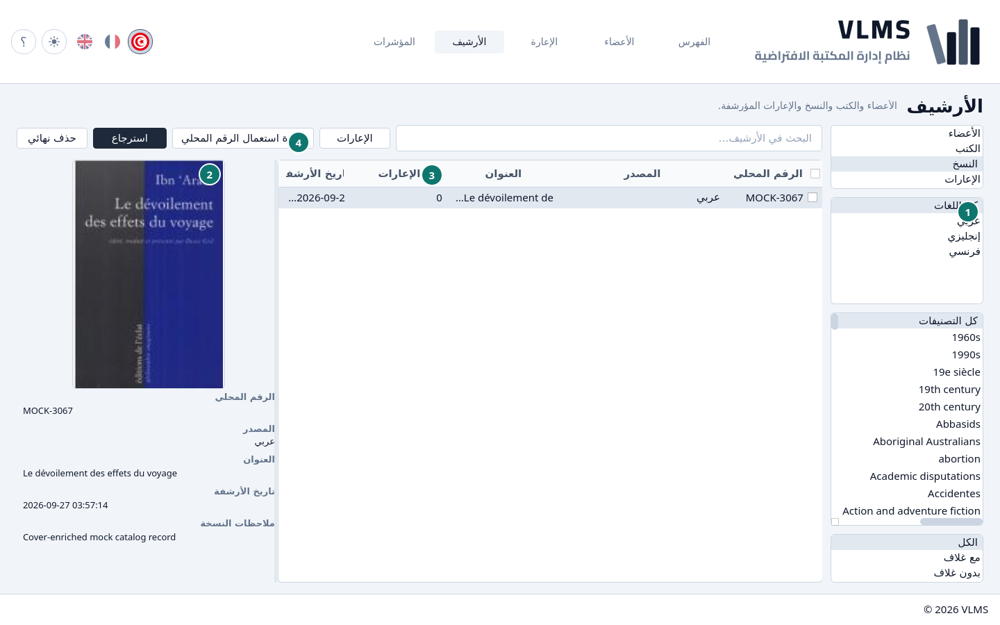
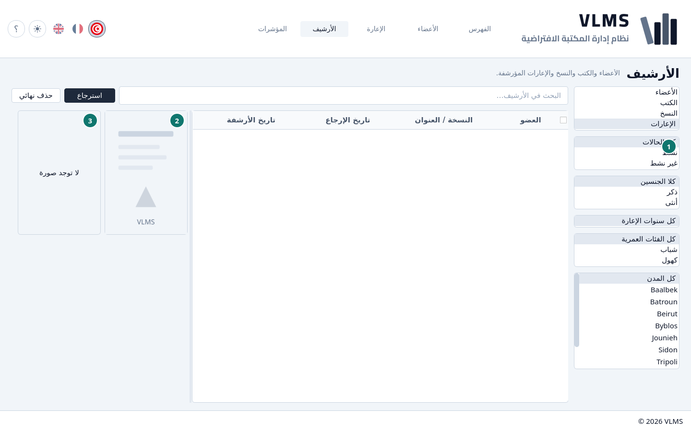
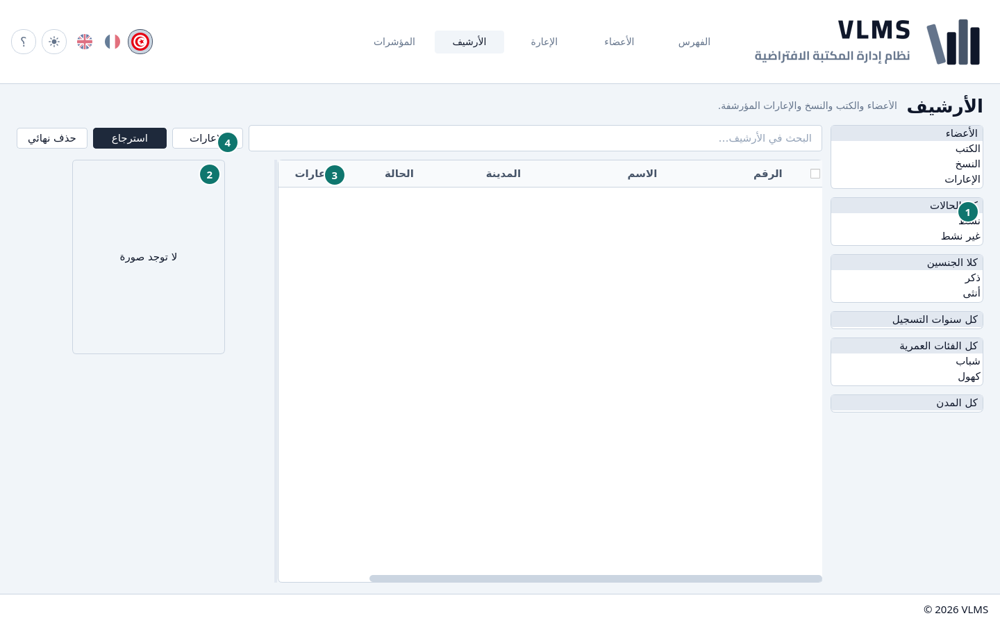
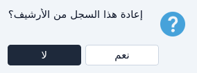
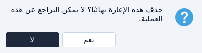

الأرشيف
ما وضعه الحذف جانباً، وما يمكن استرجاعه أو إزالته نهائياً.
الحذف يؤرشف. العنوان أو النسخة أو العضو أو الإعارة يغادر القائمة الحية ويظهر هنا. يمكن استرجاعه. لا يُتلف إلا بـحذف نهائي، وفقط حين يسمح الترتيب أدناه.
قائمة الأنواع على الجانب تختار ما تنظر إليه: الأعضاء أو الكتب أو النسخ أو الإعارات. البحث يعمل كما في الشاشات الحية.
المرشّحات تحت قائمة الأنواع تتغيّر مع النوع، وتغيير النوع يعيدها إلى «الكل».
- الأعضاء والإعارات لهما مرشّحات الأعضاء. في الإعارة ترشّح حسب العضو الذي استعار، والسنة سنة الإعارة.
- الكتب والنسخ لهما مرشّحات اللغة والتصنيف والغلاف من الفهرس. النسخة تُرشَّح حسب العنوان الذي تنتمي إليه.
الكتب


- قائمة الأنواع.
- مرشّحات الفهرس: اللغة والتصنيف والغلاف.
- البحث.
- النسخ المؤرشفة — النسخ التي ما زالت مع العنوان. لا يُحذف العنوان نهائياً إلا إذا كان هذا صفراً.
- الغلاف، أو الصورة البديلة إن لم يوجد.
- استرجاع
- حذف نهائي
النسخ


- مرشّحات الفهرس، مطبّقة على عنوان كل نسخة.
- غلاف ذلك العنوان.
- الإعارات — كل إعارة لهذه النسخة، بما فيها الإعارات المؤرشفة. الحذف النهائي يحتاج صفراً هنا.
- إعادة استعمال الرقم المحلي — يعطي ذلك الرقم لعنوان جديد أو موجود. انظر إعادة استعمال رقم محلي.
الإعارات


- مرشّحات العضو، للعضو الذي استعار.
- غلاف العنوان المُعار.
- صورة العضو، أو لا توجد صورة.
تحت الصورتين: العضو ورقم العضوية والنسخة ويوم الإرجاع ويوم الأرشفة وملاحظات الإعارة.
يمكن استرجاع إعارة، أو حذفها نهائياً في أي وقت. حذفها لا يعيد النسخة إلى الرف: النسخة كانت قد رجعت، أو أُرشفت مع عنوانها.
الأعضاء


- مرشّحات العضو.
- صورة العضو، أو لا توجد صورة.
- الإعارات
- الإعارات — سجل إعارات العضو.
لا يُحذف العضو نهائياً إلا إذا كان هذا العمود صفراً.
سجل الإعارات
زر الإعارات بعد البحث في قوائم الأعضاء والكتب والنسخ. يفتح كل إعارات العضو أو العنوان أو النسخة المظلّلة، بما فيها المؤرشفة: العضو ورقم العضوية والنسخة والتواريخ والحالة ووقت الأرشفة. السجل للقراءة فقط، فلا إعارة ولا إرجاع منه. الزر رمادي إذا لم يُعَر السطر قط.
الاسترجاع
ظلّل سطراً، أو حدّد عدة أسطر، واختر استرجاع. التأكيد يسمّي ما سيعود إلى القوائم الحية. لا يترك الأرشيف كما هو.


علامات التحديد تعمل هنا كما في كل قائمة. انظر علامات التحديد.
الحذف النهائي
حذف نهائي يسأل مرة، ثم يمسح السجل. لا يمكن التراجع.


التطبيق يسمح به بهذا الترتيب:
- إعارة، في أي وقت.
- نسخة، فقط حين تكون الإعارات صفراً. الإعارة المؤرشفة ما زالت تُحسب.
- كتاب، فقط حين تكون النسخ المؤرشفة صفراً. أزل نسخه أو استرجعها أولاً.
- عضو، فقط حين تكون الإعارات صفراً.
لا في التأكيد يترك السجل في الأرشيف.